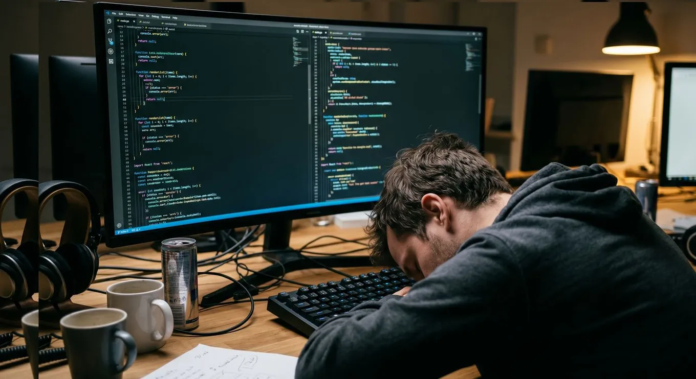

Software engineering after manual coding
Originally posted on LinkedIn, April 17, 2026.
Software engineering is shifting from manual typing to directing AI, architecture, debugging, and agent management.
Writing code is no longer the primary goal of software engineering; it becomes a byproduct as plain-language AI democratizes production. AI will not replace you as a person, but it will replace the profession built around manually typing code. Engineers who focus on directing AI, architecture, critical thinking, debugging, and managing agents stay relevant; those who work only by manual coding will be left behind.
Knowing how to write code is no longer relevant. Everything we invested and learned over the years has become secondary. The revolution that happened almost overnight less than two years ago has swept through software like a tsunami, and it is still growing. It created a new set of priorities.
The only thing that matters today is knowing how to direct AI. The profession is changing, and anyone who misses that will be left behind.
Writing code has gone from being the goal to being a byproduct. Code has been democratized. Anyone can ask a computer in plain language to create code for them. That ability is no longer reserved for experts.
The claim that AI will replace us is correct, but it will not replace you as a person. It will replace your profession as you know it. At an unprecedented pace, AI is replacing anyone who still works the old way, typing code manually on a keyboard. If you are not working with AI yet, this is a wake-up call. It will catch up with you at your next career move.
If you already work with AI but still feel FOMO, everyone feels it. We are all inside this unfolding event, at the beginning of the revolution. There is no solid foundation yet, and no rules built on years of experience. The infrastructure for the future is being written right now.
Think about the internet revolution in its early days. AltaVista was replaced by Google. Netscape was later replaced by Chrome. There are countless other examples. As with every revolution, both adoption and development are moving at an unprecedented pace.
This is not just a change in direction. The underlying infrastructure is being replaced. We are at a point in the history of technology where the profession is being redefined. Anyone clinging to manual coding as the highest form of value may find themselves out of the game.
The only certainty is that this is still unfolding. We need to roll up our sleeves and keep learning the field and its tools. You do not need to know every tool in the world. That is impossible. You need to understand the new concepts and practice the best way to work with coding agents. Once you learn that, you also discover that the tools are fairly similar.
In this new reality, we are moving from code writers to AI architects. The skills we need now sit one level higher:
- The focus shifts from writing and checking code and syntax to architecture and system design. As AI generates more code, the ability to connect the pieces into a stable whole becomes the most valuable skill.
- Critical thinking and debugging matter more than ever. AI is a "junior developer with too much confidence." Anyone who cannot read code and understand its logic deeply will not be able to review AI output and will fall into its traps, including AI "hallucinations."
- Operating AI systems means running multiple models, choosing the best ones for each task, connecting them through Agents, and building workflows that save the work of an entire team of people.
The absence of rules built from experience is an opportunity for everyone, and a risk for established companies. At this point, the advantage of a developer with 20 years of experience over a brilliant junior has shrunk significantly because both are learning a completely new tool at the same time. The same is true for companies with tens or hundreds of employees competing against ventures run by tens or hundreds of AI agents.
Companies large and small are losing sleep over the fight to stay relevant in this new reality, right in the eye of the storm.
This is a wake-up call. Code is not dead. It has simply become invisible. We are no longer digging holes with shovels, meaning keyboards. We are operating a powerful excavator, meaning AI.
Anyone who only knows how to dig will be replaced. Anyone who knows how to operate the machine and design the building will become more relevant than ever. Cursor, Claude Code, Codex, and the rest are already here. Pick a tool and master it.

FAQ
- Is manual coding still the center of software engineering?
- No. The post argues writing code is a byproduct, not the goal, because AI lets more people produce code from plain language.
- Will AI replace software engineers as people?
- The post says AI will not replace you as a person but will replace the profession as it exists when work means typing code manually.
- What skills should engineers prioritize instead?
- Focus on directing AI, architecture, critical thinking, debugging, and managing agents rather than relying solely on manual coding.